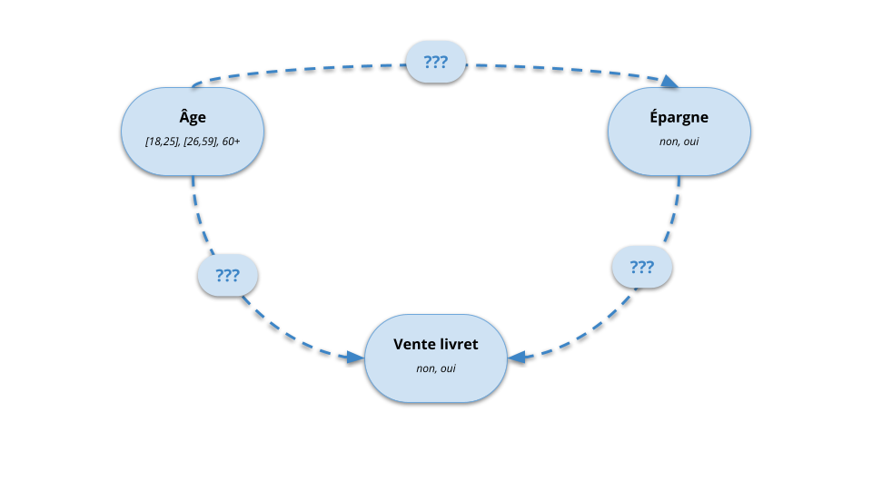

Modélisation stochastique et approche bayésienne
Apprentissage automatique des lois de probabilité conditionnelles
Roland Donat
Spécialité Cyber Data
Objectifs de la séance
- Comprendre les problématiques liées à la construction pratique d'un réseau bayésien
- Estimer automatiquement les lois de probabilité conditionnelles (LPC) à partir de données observées sur le phénomène étudié

Introduction

Problématique
Objectif
- Modéliser un phénomène aléatoire impliquant différentes variables \(X_{1}, \ldots, X_{D}\)
- Utiliser un réseau bayésien afin de représenter au mieux les relations entre les variables
Problèmes
- Comment déterminer la structure du réseau bayésien (i.e. le graphe)?
- Comment estimer les lois de probabilité conditionnelles (LPC) \(P(X_{d}|\text{pa}(X_{d})),~ d = 1, \ldots, D\) ?
Approches envisageables
- Approche par expertise : utilisation d'avis d'experts et connaissances métiers
- Approche statistique : utilisation de bases de données (contenant éventuellement des informations incomplètes)
- Approche mixte : expertise + bases de données
Problématique

Problématique

Problématique

Problématique

Construction par expertise
Acquisition de l'information
- Trouver des personnes expertes fiables et coopératives
- Familiariser ces personnes à la notion de probabilité
- Tenir compte de leurs biais éventuels (souvent inconscients)
- Utiliser un outil pour faciliter le recueil des informations
- Exemple : échelle de probabilité :

Construction par expertise
Problème
- L'expertise métier permet en général de construire des RB fidèles à la réalité opérationnelle
- En revanche, l'humain a intuitivement tendance à introduire des connexions convergentes
- Exemple : Soit \(Y\) un phénomène à expliquer et \(X_{1}, \ldots, X_{D}\), \(D\) facteurs explicatifs possibles
- Structure naturelle : \(X_{1} \to Y, \ldots, X_{D} \to Y\)
- Risque d'explosion combinatoire : Définir \(P(Y|X_{1},\ldots,X_{D})\) nécessite \(2^{D}\) valeurs dans le cas où les variables sont binaires
Solutions possibles
- Inverser les flèches et utiliser une structure naïve : \(Y \to X_{1}, \ldots, Y \to X_{D}\) en assumant les simplifications induites
- Introduction d'un modèle de LPC particulier, e.g. modèle OU-bruité
Rappels statistiques
Rappels statistiques
Caractéristiques des données
- Un tableau de données, notée \(\mathcal{D}\), est un ensemble de \(N\) observations/individus/exemples caractérisés par \(D\) variables
Formellement, un tableau de données peut se mettre sous la forme d'une matrice :
\begin{equation*} \mathcal{D} = \lrBrack{ \begin{array}{ccccc} x_{1,1} & \ldots & x_{1,d} & \ldots & x_{1,D} \\ \vdots & & \vdots & & \vdots \\ x_{n,1} & \ldots & x_{n,d} & \ldots & x_{n,D} \\ \vdots & & \vdots & & \vdots \\ x_{N,1} & \ldots & x_{N,d} & \ldots & x_{N,D} \\ \end{array} } \end{equation*}- Le vecteur colonne \(\mbf{x}_{\cdot, d} = \lrPar{x_{1,d}, \ldots, x_{n,d}, \ldots, x_{N,d}}\) représente toutes les observations de la variable \(d\)
- Le vecteur ligne \(\mbf{x}_{n, \cdot} = \lrPar{x_{n,1}, \ldots, x_{n,d}, \ldots, x_{n,D}}\) représente la $n$-ème observation de la BdD
Rappels statistiques

Caractéristiques des données
- Nombre de variables : 3
- Nombre d'individus : 14
- Variable Âge à valeurs dans \(\set{[18,25] ; [26, 59] ; 60+}\)
- Variable Épargne à valeurs dans \(\set{\text{non}, \text{oui}}\)
- Variable Vente livret à valeurs dans \(\set{\text{échec}, \text{succès}}\)
Rappels statistiques
Objectifs
- Résumer quantitativement l'information contenue dans des données en utilisant un modèle probabiliste
- Exploiter le modèle pour déduire de nouvelles connaissances
Démarche
- Considérer les données comme des réalisations de variables aléatoires (v.a.) associées à une certaine loi jointe
- Formellement, cela signifie que chaque observation \(\mbf{x}_{n, \cdot} = \lrPar{x_{n,1}, \ldots, x_{n,D}}\) est supposée être une réalisation d'une suite de v.a. \(\mbf{X} = \lrPar{X_{1},\ldots,X_{D}}\) de loi jointe \(\mathcal{L}\lrPar{\mbf{\theta}}\) où \(\mbf{\theta}\) représente les paramètres de la loi
- Notation : \(\mbf{X} = \lrPar{X_{1},\ldots,X_{D}} \sim \mathcal{L}\lrPar{\mbf{\theta}}\)
Rappels statistiques
Remarques
- Si les observations dans les données sont indépendantes, on parle de données i.i.d. (Indépendantes et Identiquement Distribuées)
- Si les caractéristiques (variables) des observations sont indépendantes, alors chaque variable \(X_{d}\) suit une loi \(\mathcal{L}_{d}\lrpar{\mbf{\theta}_{d}}\) (Notation : \(X_{d} \sim \mathcal{L}_{d}\lrpar{\mbf{\theta}_{d}}\))
Modèle gaussien
- Données unidimensionnelles (\(D = 1\))
- \(\mbf{X} = X_{1} \sim \mathcal{N}\lrPar{\mu, \sigma}\)
- \(\mbf{\theta} = (\mu,\sigma)\) : moyenne et écart-type
- Données multidimensionnelles (\(D \ge 1\))
- \(\mbf{X} = \lrPar{X_{1},\ldots,X_{D}} \sim \mathcal{N}\lrPar{\mbf{\mu}, \mbf{\Sigma}}\)
- \(\mbf{\theta} = (\mbf{\mu},\mbf{\Sigma})\) : vecteur des moyennes et matrice de variance-covariance
Rappels statistiques
Contexte
- Données : On dispose de données \(\mathcal{D} = \lrpar{\mbf{x}_{1,\cdot}, \ldots, \mbf{x}_{N,\cdot}}\) où chaque observation \(\mbf{x}_{n,\cdot}\) est caractérisée par \(D\) variables \(\lrPar{x_{n,1},\ldots,x_{n,D}}\)
- Modélisation : On suppose que \(\mathcal{D}\) est une suite de \(N\) réalisations i.i.d. du vecteur aléatoire \(\mbf{X} = \lrpar{X_{1}, \ldots, X_{D}}\) distribué selon la loi \(\mathcal{L}\lrPar{\mbf{\theta}}\)
- Problématique : Comment estimer les paramètres \(\mbf{\theta}\) à partir des données \(\mathcal{D}\)?
Solution
- Construire un estimateur de \(\mbf{\theta}\)
- Approche classique : Déterminer l'estimateur du maximum de vraisemblance de \(\mbf{\theta}\), souvent noté \(\mbf{\theta}^{\text{MV}}\)
Rappels statistiques
Vraisemblance d'un modèle par rapport à une observation
- Soit \(\mathcal{D} = \lrpar{\mbf{x}_{1,\cdot}, \ldots, \mbf{x}_{N,\cdot}}\) un ensemble de données i.i.d. modélisées par les v.a. \(\mbf{X} = \lrpar{X_{1}, \ldots, X_{D}} \sim \mathcal{L}\lrPar{\mbf{\theta}}\)
- La vraisemblance mesure la plausibilité d'un modèle probabiliste (caractérisé par un ensemble de paramètres
\(\mbf{\theta}\)) par rapport à l'observation \(\mbf{x}_{n,\cdot} \in \mathcal{D}\)
- La vraisemblance est notée \(L\lrPar{\mbf{\theta};\mbf{x}_{n,\cdot}}\)
- En pratique le logarithme de la vraisemblance est souvent utilisé, on parle alors de log-vraisemblance \(\ell\lrPar{\mbf{\theta};\mbf{x}_{n,\cdot}} = \ln L\lrPar{\mbf{\theta};\mbf{x}_{n,\cdot}}\)
Interprétation
- une vraisemblance élevée signifie que le modèle choisi est crédible par rapport à la donnée observée
- une vraisemblance faible signifie que le modèle choisi est peu crédible par rapport à la donnée observée
Rappels statistiques
Vraisemblance d'un modèle discret et fini par rapport à une observation
- Si les v.a. \(\mbf{X} = \lrpar{X_{1}, \ldots, X_{D}}\) sont discrètes et finies, alors la vraisemblance du modèle \(\Prob\lrPar{X_{1},\ldots, X_{D}}\) sachant l'observation \(\mbf{x}_{n,\cdot}\) est donnée par : \[ L\lrPar{\Prob;\mbf{x}_{n,\cdot}} = \Prob\lrPar{X_{1} = x_{n,1},\ldots, X_{D} = x_{n,D}}, \quad \text{(ici } \mbf{\theta} = \Prob \text{)} \]
Exemple : vraisemblance d'une observation
- Considérons la loi jointe ci-contre pour représenter le processus de vente d'un livret A :
- Observation :
- Âge : [26,59]
- Épargne : non
- Vente livret A : échec
- Vraisemblance = 0.12
- Log-vraisemblance \(\simeq\) -2.12
Rappels statistiques
Vraisemblance d'un modèle par rapport à des données
- La vraisemblance d'un modèle (paramétré par \(\mbf{\theta}\)) par rapport à des données \(\mathcal{D}\), notée \(L\lrPar{\mbf{\theta};\mathcal{D}}\), correspond à la plausibilité du modèle \(\mbf{\theta}\) par rapport à l'observation des données \(\mathcal{D}\)
- Lorsque les données sont supposées i.i.d., la vraisemblance est définie par \[ L\lrPar{\mbf{\theta};\mathcal{D}} = \prod_{n = 1}^{N} L\lrPar{\mbf{\theta};\mbf{x}_{n,\cdot}} \]
Lorsque l'on s'intéresse à des données, on utilise souvent la log-vraisemblance qui est définie par :
\begin{align*} \ell\lrPar{\mbf{\theta};\mathcal{D}} & = \ln L\lrPar{\mbf{\theta};\mathcal{D}} \\ & = \sum_{n = 1}^{N} \ln L\lrPar{\mbf{\theta};\mbf{x}_{n,\cdot}} \\ & = \sum_{n = 1}^{N} \ell\lrPar{\mbf{\theta};\mbf{x}_{n,\cdot}} \end{align*}
Rappels statistiques
Interprétation de la vraisemblance
- La vraisemblance est un indicateur permettant de comparer la pertinence de différents modèles probabilistes en les confrontant aux données observées
- La vraisemblance ne peut être utilisée pour évaluer un modèle de manière isolée
- Dans l'absolu plus la log-vraisemblance d'un modèle par rapport à des \(\mathcal{D}\) est élevée, plus le modèle probabiliste considéré est adapté pour représenter le phénomène sous-jacent
Attention !
- La vraisemblance décroît avec le nombre de données observées, donc :
- Il n'est pas pertinent de comparer des vraisemblances obtenues à partir de jeux de données de taille différente
- En revanche, il peut être intéressant de comparer des vraisemblances moyennes par donnée observée
Rappels statistiques
Exemple : vraisemblance d'un modèle par rapport à des données
- Données : 3 individus définis par 3 variables
- Modèle : une loi jointe sur les variables caractérisant les individus
Modèle probabiliste
Données

Rappels statistiques
Exemple : vraisemblance d'un modèle par rapport à des données
- Données : 3 individus définis par 3 variables
- Modèle : une loi jointe sur les variables caractérisant les individus
Modèle probabiliste

Données
Rappels statistiques
Exemple : vraisemblance d'un modèle par rapport à des données
- Données : 3 individus définis par 3 variables
- Modèle : une loi jointe sur les variables caractérisant les individus
Modèle probabiliste

Données

Rappels statistiques
Exemple : vraisemblance d'un modèle par rapport à des données
- Données : 3 individus définis par 3 variables
- Modèle : une loi jointe sur les variables caractérisant les individus
Modèle probabiliste

Données

Rappels statistiques
Exemple : vraisemblance d'un modèle par rapport à des données
- Données : 3 individus définis par 3 variables
- Modèle : une loi jointe sur les variables caractérisant les individus
Modèle probabiliste
Données

Rappels statistiques
Estimateur du maximum de vraisemblance
- Soit \(\mathcal{D} = \lrpar{\mbf{x}_{1,\cdot}, \ldots, \mbf{x}_{N,\cdot}}\) un ensemble de données supposées i.i.d. modélisées par les v.a. \(\mbf{X} = \lrpar{X_{1}, \ldots, X_{D}} \sim \mathcal{L}\lrPar{\mbf{\theta}}\)
- On dit que \(\mbf{\theta}^{\text{MV}}\) est un estimateur du maximum de vraisemblance (EMV) de \(\mbf{\theta}\) si \(\mbf{\theta}^{\text{MV}}\) maximise la vraisemblance, c-à-d. \[ \mbf{\theta}^{\text{MV}} = \argmax{\mbf{\theta}} L\lrPar{\mbf{\theta};\mathcal{D}} \]
Propriétés des estimateurs du maximum de vraisemblance
- Convergents en probabilité vers les paramètres à estimer
- Efficaces, c'est-à-dire qu'ils convergent rapidement
- Asymptotiquement normaux, c'est-à-dire qu'il est facile de construire des intervalles de confiance sur les estimations obtenues
Apprentissage des LPC - Données complètes

Apprentissage des LPC - Données complètes
Hypothèses
- On modélise un phénomène aléatoire caractérisé par des variables aléatoires \(X_{1}, \ldots, X_{D}\) dont la loi est représentée par un RB
- Les variables aléatoires \(X_{1}, \ldots, X_{D}\) sont discrètes et finies
- Le graphe du RB est supposé connu
- On dispose d'un jeu de données \(\boldsymbol{D} = (\boldsymbol{x}_{1}, \ldots, \boldsymbol{x}_{N})\) où chaque observation \(\boldsymbol{x}_{n}\) est caractérisée par \(D\) variables \((x_{n,1},\ldots,x_{n,D})\)
Objectif
- On suppose que \(\mathcal{D}\) est une suite de \(N\) réalisations i.i.d. du vecteur aléatoire discret et fini \(\mbf{X} = \lrpar{X_{1}, \ldots, X_{D}}\) dont la loi est représentée par un RB \(\mathcal{M}\) défini par ses LPC
- On cherche à estimer les LPC de ce RB (car la structure est supposée connue), autrement dit : \[ \mbf{\theta} = \lrPar{\Prob\lrPar{X_{1}|\pa\lrPar{X_{1}}}, \ldots, \Prob\lrPar{X_{D}|\pa\lrPar{X_{D}}}} \]
- Notation alternative : \(\mbf{\theta} = \lrPar{\theta_{1}, \ldots, \theta_{d}, \ldots, \theta_{D}}\) avec \(\theta_{d} = \Prob\lrPar{X_{d}|\pa\lrPar{X_{d}}}\)
Apprentissage des LPC - Données complètes

Apprentissage des LPC - Données complètes

Apprentissage des LPC - Données complètes

Apprentissage des LPC - Données complètes

Apprentissage des LPC - Données complètes

Apprentissage des LPC - Données complètes
Apprentissage des LPC - Données complètes

Apprentissage des LPC - Données complètes

Apprentissage des LPC - Données complètes

Apprentissage des LPC - Données complètes
Méthode du maximum de vraisemblance
La vraisemblance d'un RB \(\mathcal{M}\lrPar{\theta_{1},\ldots,\theta_{D}}\) par rapport aux données \(\mathcal{D} = (\boldsymbol{x}_{1}, \ldots, \boldsymbol{x}_{N})\) i.i.d. est définie par
\begin{align*} L\lrPar{\theta_{1},\ldots,\theta_{D};\mathcal{D}} & = \prod_{n = 1}^{N} L\lrPar{\theta_{1},\ldots,\theta_{D};\mbf{x}_{n,\cdot}} \\ & = \prod_{n = 1}^{N} \prod_{d = 1}^{D} \Prob\lrPar{X_{d} = x_{n,d}|\pa\lrPar{X_{d}} = \pa\lrPar{x_{n,d}}} \end{align*}- D'où la log-vraisemblance : \[ \ell\lrPar{\theta_{1},\ldots,\theta_{D};\mathcal{D}} = \sum_{n = 1}^{N} \sum_{d = 1}^{D} \ln \Prob\lrPar{X_{d} = x_{n,d}|\pa\lrPar{X_{d}} = \pa\lrPar{x_{n,d}}} \]
- Objectif : Trouver \(\theta_{1},\ldots,\theta_{D}\) tels que \(\ell\lrPar{\theta_{1},\ldots,\theta_{D};\mathcal{D}}\) soit maximum, c-à-d, résoudre le problème d'optimisation : \[ \theta_{1}^{\text{MV}} ,\ldots,\theta_{D}^{\text{MV}} = \argmax{\theta_{1},\ldots,\theta_{D}} \ell\lrPar{\theta_{1},\ldots,\theta_{D};\mathcal{D}} \]
Apprentissage des LPC - Données complètes
Estimateur du maximum de vraisemblance
- L'estimation du maximum de vraisemblance de chaque LPC d'un RB a pour expression :
\[
\hat{P}^{\text{MV}}(X_{d} = x_{d,k}|\text{pa}(X_{d}) = \boldsymbol{x}^{\prime}_{d,j}) =
\frac{\# \{X_{d} = x_{d,k}~ \text{et}~
\text{pa}(X_{d}) = \boldsymbol{x}^{\prime}_{d,j}\}}{\# \{\text{pa}(X_{d}) = \boldsymbol{x}^{\prime}_{d,j}\}}
\]
- \(x_{d,k}\) : \(k\) -ème valeur possible pour la v.a. \(X_{d}\)
- \(\boldsymbol{x}^{\prime}_{d,j}\) : \(j\) -ème configuration de valeurs possibles pour les parents de la v.a. \(X_{d}\)
- Interprétation :
- Chaque probabilité \(\hat{P}^{\text{MV}}(X_{d} = x_{d,k}|\text{pa}(X_{d}) =
\boldsymbol{x}^{\prime}_{d,j})\) est estimée par le rapport entre :
- le nombre d'événements \(\{X_{d} = x_{d,k}~ \text{et}~ \text{pa}(X_{d}) = \boldsymbol{x}^{\prime}_{d,j}\}\) observés dans les données
- et le nombre d'événements \(\{\text{pa}(X_{d}) = \boldsymbol{x}^{\prime}_{d,j}\}\) observés dans les données
- Chaque probabilité \(\hat{P}^{\text{MV}}(X_{d} = x_{d,k}|\text{pa}(X_{d}) =
\boldsymbol{x}^{\prime}_{d,j})\) est estimée par le rapport entre :
Apprentissage des LPC - Données incomplètes
Apprentissage des LPC - Données incomplètes
Représentation classique
- Les observations de chaque variable sont données explicitement
- Représentation intuitive mais peu adaptée aux traitements des données incomplète
Apprentissage des LPC - Données incomplètes

Représentation disjonctive (one-hot encoding)
- Chaque variable \(X\) possédant \(K\) modalités est décomposée en \(K\) sous-variables binaires où la modalité prise est associée à la valeur 1
- Représentation plus complexe mais adaptée aux traitements des différents types de données incomplètes
Apprentissage des LPC - Données incomplètes
Apprentissage des LPC - Données incomplètes

Apprentissage des LPC - Données incomplètes

Apprentissage des LPC - Données incomplètes
Apprentissage des LPC - Données incomplètes
Principes de l'algorithme EM
- Algorithme initialement développé par (Dempster, A. and Laird, N. and Rubin, D. B., 1977)
- Ensemble d'algorithmes d'optimisation itératifs
- Décomposition d'un problème d'optimisation complexe en deux sous problèmes d'optimisation alternés plus simples
Application en statistiques
- Calculer les estimations des paramètres d'un modèle probabiliste par la méthode du maximum de vraisemblance en présence de données incomplètes
Propriété
- Méthode d'optimisation locale
- La convergence vers l'optimum global n'est pas garantie
- La qualité de la solution calculée dépend de l'initialisation de l'algorithme
Apprentissage des LPC - Données incomplètes
Contexte
- Données disponibles \(\mathcal{D} = \mathcal{D}_{\text{C}} \union \mathcal{D}_{\text{I}}\) :
- \(\mathcal{D}_{\text{C}}\) : Observations complètement observées
- \(\mathcal{D}_{\text{I}}\) : Observations partiellement observées
- Modélisation : \(\mathcal{D} =\) réalisations i.i.d. de la suite de v.a. \(\mbf{X} = \lrpar{X_{1}, \ldots, X_{D}}\) représenté par un RB \(\mathcal{M}\) de structure supposée connue
Apprentissage des LPC - Données incomplètes
Apprentissage des LPC - Données incomplètes

Apprentissage des LPC - Données incomplètes
Apprentissage des LPC - Données incomplètes

Apprentissage des LPC - Données incomplètes

Apprentissage des LPC - Données incomplètes

Apprentissage des LPC - Données incomplètes

Apprentissage des LPC - Données incomplètes
Apprentissage des LPC - Données incomplètes

Apprentissage des LPC - Données incomplètes

Apprentissage des LPC - Données incomplètes
Algorithme EM dans les RB (structure connue)
- Initialisation du modèle RB \(\mathcal{M}^{(0)}\) caractérisé par ses LPC
- Étape E : Estimer la loi des données manquantes à partir du RB courant, noté \(\mathcal{M}^{(t)}\)
- Pour chaque donnée incomplète \(\mbf{x} = \lrpar{\mbf{x}_{\text{obs}},\mbf{x}_{\text{mqt}}} \in \mathcal{D}_{\text{I}}\)
- Calculer la distribution de ses variables manquantes \(\mbf{X}_{\text{mqt}}\) conditionnellement à ses variables observées \(\mbf{X}_{\text{obs}}\)
- Calculer \(\Prob\lrPar{\mbf{X}_{\text{obs}}|\mbf{X}_{\text{mqt}}}\) en utilisant un algorithme d'inférence dans \(\mathcal{M}^{(t)}\)
- "Nouvelles" données courante \(\mathcal{D}^{(t+1)} = \mathcal{D}_{\text{C}} \union \mathcal{D}_{\text{I}}^{(t+1)}\) complétées par les distributions des variables manquantes
- Pour chaque donnée incomplète \(\mbf{x} = \lrpar{\mbf{x}_{\text{obs}},\mbf{x}_{\text{mqt}}} \in \mathcal{D}_{\text{I}}\)
- Étape M : Estimer les LPC du modèle \(\mathcal{M}^{(t+1)}\) à partir des données complétées
\(\mathcal{D}^{(t)}\)
- Utilisation de la méthode du maximum de vraisemblance
- Répéter les étapes E et M tant que \(\mathcal{M}^{(t)}\) et \(\mathcal{M}^{(t+1)}\) sont significativement différents
Résumé de la séance
Points clés sur l'apprentissage des LPC
- Rappels généraux sur l'apprentissage statistique
- Formalisation du problème d'apprentissage des LPC du point de vue statistique
- Mise en oeuvre de la méthode du maximum de vraisemblance pour estimer les LPC d'un RB
Pour aller plus loin
- Apprentissage des LPC dans le cas de données incomplètes
- Apprentissage automatique de la structure d'un RB
Merci pour votre attention !

Bibliographie
Dempster, A. and Laird, N. and Rubin, D. B. (1977). Maximum {Likelihood} from {Incomplete} {Data} {Via} the {EM} {Algorithm}, Journal of the Royal Statistical Society.